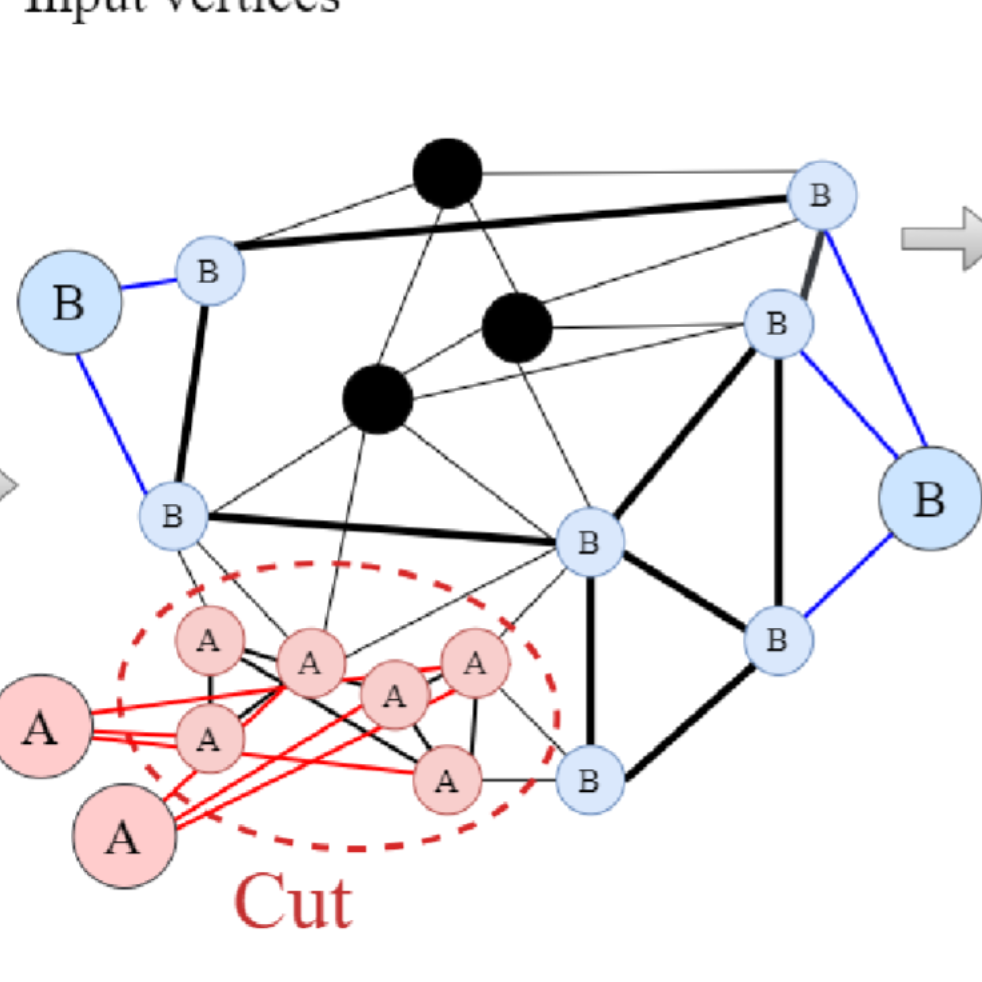
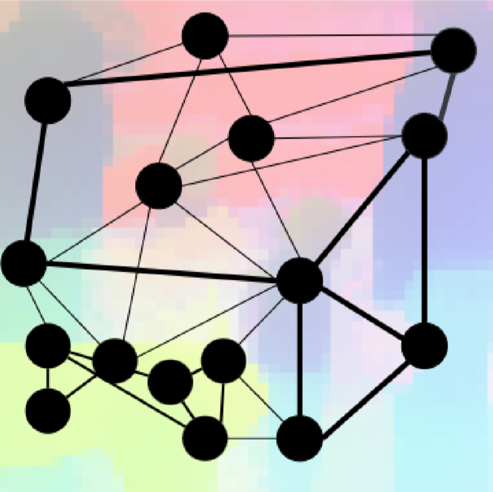
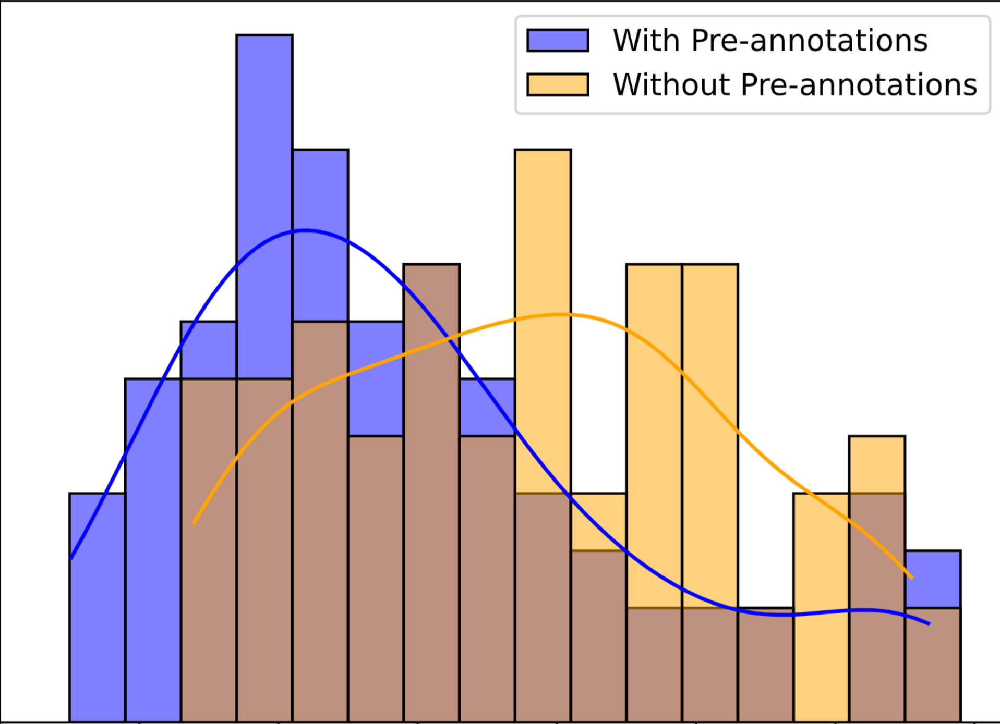
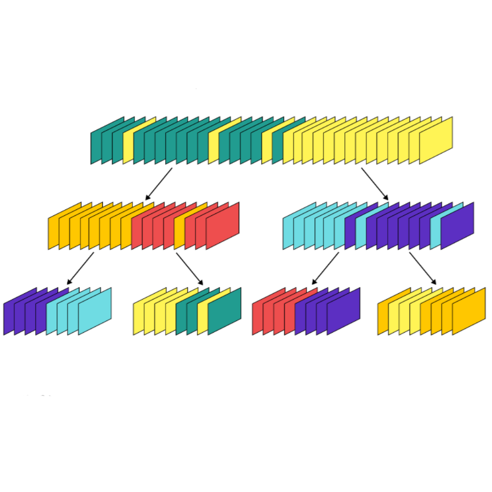
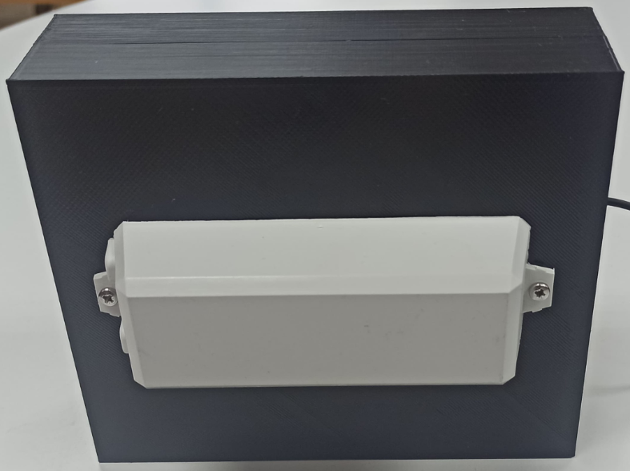
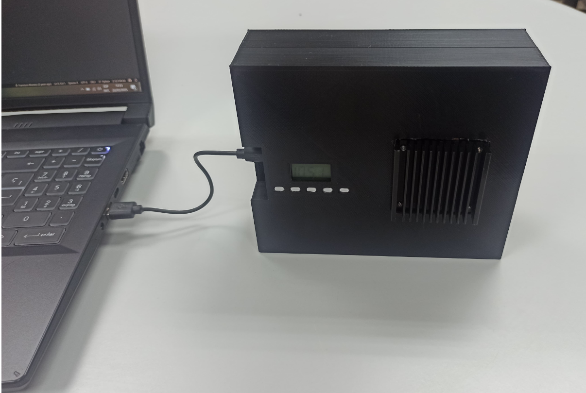

|
Email: juan.gutierrez [at] upm [dot] es I am a Ph.D student in Computer Vision at UPM, supervised by Dr. José Luis Blanco Murillo, and, since September 2022, member of GAPS research group. Resume | Scholar | GitHub | ResearchGate | ORCID | LinkedIn | X |

|
ResearchI'm interested in the principles of self-supervised representation learning for image and video foundation models, aiming to construct latent spaces that robustly encode semantics and spatiotemporal dynamics. I leverage the geometry of the resulting feature manifold to analyze data structure and propagate sparse relational supervision. Some papers are highlighted. |
|


|
PANC: Prior-Aware Normalized Cut for Object Segmentation
Juan Gutiérrez, Víctor Gutiérrez, José Luis Blanco Preprint, 2026 A weakly-supervised spectral segmentation framework using minimal annotated visual tokens to produce stable, controllable object masks. |
|


|
An Evaluation of Hybrid Annotation Workflows on High-Ambiguity Spatiotemporal Video Footage
Juan Gutiérrez, Víctor Gutiérrez-García, Ángel Mora-Sánchez, Silvia Rodríguez-Jiménez, José Luis Blanco-Murillo Preprint, 2026 Benchmarking assisted annotation workflows using fine-tuned vision-language model for video. |
|


|
Open-Source System for Multilingual Translation and Cloned Speech
Synthesis
Mateo Cámara, Juan Gutiérrez, María Pilar Daza, José Luis Blanco Forum Acusticum / Euronoise 2025, Málaga, Spain arXiv | bibtex An open-source pipeline combining speech recognition, LLM-based translation, and voice-cloning TTS for real-time multilingual communication. |

|
AI-Boosted Video Annotation: Exploring Pre-Labeling with
Cross-Modalities
Juan Gutiérrez, Ángel Mora Sánchez, Silvia Rodríguez Jiménez, José Luis Blanco Distributed Computing and Artificial Intelligence (DCAI), 2024 (Springer LNCS, 2025) springer | bibtex Leveraging pre-trained cross-modal models within the Human-in-the-Loop paradigm to efficiently pre-annotate large-scale video datasets. |

|
A Study on the Development of a Video Annotation Support System Using an Image- and Text-Agnostic Model
Juan Gutiérrez Master's Thesis, UPM, 2023 thesis | bibtex Developed a CLIP-based human-in-the-loop system for efficient video annotation via keyframe selection, semantic retrieval, and automatic label propagation. |
Miscellanea |
Teaching |
Teaching Assistant
- Design of Communications Systems and Equipment (M.S in Signal Theory and Communications, 1st course, UPM) - Computing and Visualization Tools (B.S in Telecommunication Engineering, 2nd course, UPM) Thesis Supervisor - Supervised two M.S. and two B.S. theses |
Talks |
- Text-Based Video Retrieval through Hierarchical Content Representation (Great Talks @ Teleco, 2025,
Madrid, Spain)
- Using Agnostic Models on Image and Text to Support Video Annotation (AIAI 2023, León, Spain) |
Short Papers |
Data Integration and Analytics of Cone Crusher Responses
G. Asbjörnsson, M. Evertsson, P. Plaza, S. Rodríguez-Jiménez, J. Gavilanes, J. Cortón-González, Juan Gutiérrez, J. L. Blanco, J. E. Ortiz 14th International Comminution Symposium (Comminution '25), Cape Town, 2025 |
|
Last update: February 2026 |